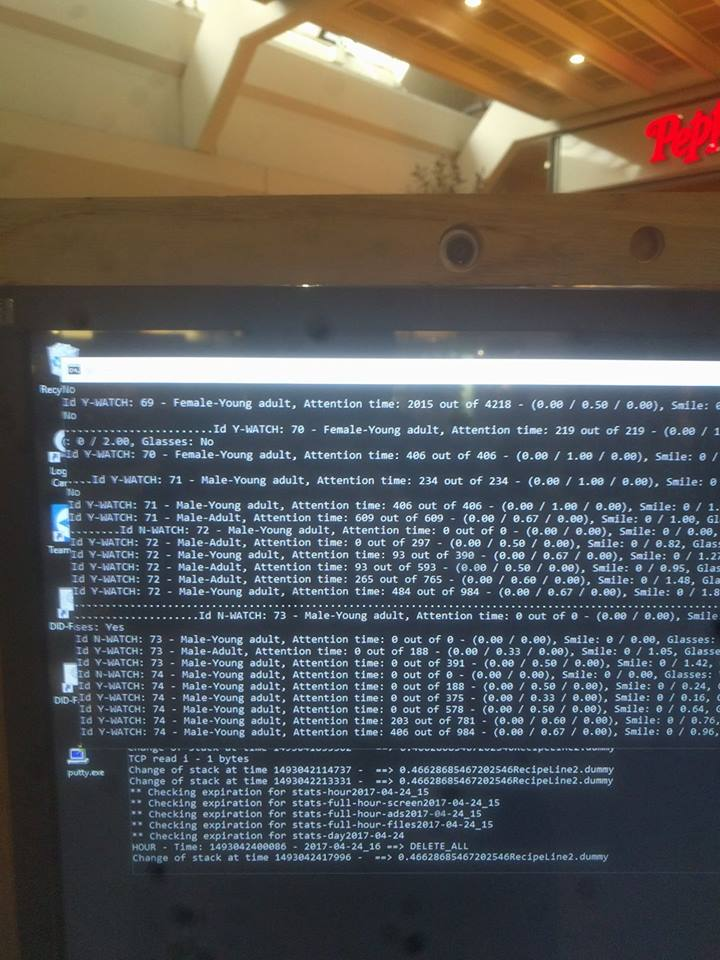

Machine Learning og Artificial Intelligence
2026-10-06
Fra regler til eksempler. Hvad maskinlæring er, og hvad det ikke er
En kort historie om AI og hvorfor det hele sker nu
Hvordan en maskine “ser”
At lære af ord eksemplificeret ved en lille sprogmodel
Hvornår er en model god? Og hvem der bestemmer det
Det digitale samfund: ansvar, privatliv, rettigheder og diskrimination
I dag bygger vi videre på næsten alt, I har lavet indtil nu.
| Fra | Det, vi bruger i dag |
|---|---|
| Lektion 1 | Alt er tal. Og en regel kan oversættes til et program |
| Lektion 4 | Hvad en algoritme er. Skal vi stadig kode? |
| Lektion 6 | Ordbøger og tekstanalyse: Think Python kapitel 10 og 12 |
Lektion 1
… et billede af en kat er også bare tal.
Lektion 4
… i maskinlæring skriver man én algoritme, der laver en anden.
Et ord, vi ikke kan komme udenom i dag. Men hvad dækker det egentlig over?
Skriv én sætning ned, før vi går videre. Vi kigger på den igen til sidst.
Tilskudsreglen i § 4 kunne oversættes direkte til Python, fordi nogen havde skrevet den ned. I forenklet form:
Det virker, når reglen findes. Men hvad gør man, når ingen kan skrive den ned?
Øvelse: hvad er reglen for, at et billede viser en kat?
Ræven er en kat, og nøgenkatten er ikke. Hver gang vi retter reglen, finder nogen et nyt dyr, den ikke passer på. Og i virkeligheden har computeren ikke engang ører og knurhår at se på … kun tal.
Computere lærer at løse opgaver og træffe beslutninger baseret på data, uden at være eksplicit programmeret til hver enkelt situation.
I stedet for at følge faste regler, som et menneske har skrevet, finder systemet selv mønstre i eksempler.
Tænk på, hvordan et barn lærer at genkende en kat. Ikke ved at få en liste af regler (fire ben, spidse ører, pels) men ved at se hundredvis af katte. Maskinlæring lærer på samme måde: ved at blive vist mange eksempler.
Forskellen fra lektion 1: I skrev I reglen. Her skriver man et program, der finder reglen selv.
Data er grundlaget: billeder, tekst, tal, lyd. Alt, der kan blive til tal. Jo mere relevant og varieret, desto bedre kan systemet lære.
Algoritmen er fremgangsmåden, der finder mønstrene. Den justerer gradvist en masse indstillinger — parametre — så den bliver bedre til opgaven.
Modellen er resultatet: det, der kommer ud, når algoritmen er færdig. Den kan én bestemt ting, fx genkende katte eller forudsige priser.
I lektion 4 var en algoritme en præcis, endelig række trin, der tager et input og giver et output. Det gælder også her. Der er bare to:
Lærealgoritmen kører på data og justerer parametrene. Den skriver man som programmør.
Den færdige model tager et nyt input og giver et svar. Den har ingen skrevet. Den er lavet af den første algoritme.
Det er det nye: en algoritme, der laver en anden algoritme. Lærealgoritmen er præcist beskrevet, men den model, der kommer ud, har ingen programmør skrevet linje for linje.
Netflix anbefaler serier ud fra, hvad brugere, der ligner dig, har set
Din telefon låser op, når den genkender dit ansigt
Oversættelse og chatbots bygger på modeller, der er trænet på enorme mængder tekst
Autokorrektur og tekstforslag, når du skriver en besked
Hvor har I mødt det i dag?
Ordene bruges i flæng. Men de ligger “inden i” hinanden:
Kunstig intelligens (AI) er det store felt: alt, hvor maskiner løser opgaver, vi ellers ville kalde intelligente. Også regler skrevet af mennesker
Maskinlæring (ML) er en del af AI: systemer, der lærer fra data i stedet for at få reglerne
Deep learning er en del af ML: store neurale netværk med mange lag
Sprogmodeller som ChatGPT er en del af deep learning
Hvordan har I brugt (generativ) AI på kurset og studiet indtil nu? Hvad har I lært af det — og er der noget, I vil gøre mere eller mindre af?
1945 og frem: de første computere gør tanken om AI praktisk mulig.
Optimismen i 50’erne og 60’erne:
Den første AI-vinter i 70’erne og 80’erne:
Det centrale ved ImageNet er, at gennembruddet ikke kom af en ny idé, men af data — og af mange menneskers arbejde med at mærke den.
Fire ting har ændret sig … men kun én af dem er en bedre idé:
Computerkraft: fra store maskinrum til grafikkort og chips bygget specielt til AI
Data: fra datasæt, nogen har lavet i hånden, til hele internettet
Algoritmer: fra den simple perceptron til transformer-modeller
Penge: fra forskning på universiteter til en industri for milliarder
Kun ét af de fire punkter handler om en bedre idé. De tre andre handler om mere: mere regnekraft, mere data og flere penge.
Er AI noget, der bekymrer jer?
Hvad håber I, AI vil løse, i jeres liv og/eller på jeres fremtidige arbejde?
Det første princip fra lektion 1. Et billede er et gitter af tal: hvert tal er én pixels lysstyrke, fra 0 (sort) til 255 (hvid).
Kat (forenklet, 8×8): Hund (samme størrelse):
[ 10, 15, 20, 25, 25, 20, 15, 10] [ 10, 15, 20, 20, 20, 20, 15, 10]
[ 15, 80, 120, 140, 140, 120, 80, 15] [ 15, 70, 100, 110, 110, 100, 70, 15]
[ 20, 180, 250, 255, 255, 250, 180, 20] [ 20, 150, 200, 210, 210, 200, 150, 20]
[ 25, 200, 90, 220, 220, 90, 200, 25] [ 25, 170, 180, 200, 200, 180, 170, 25]
[ 25, 180, 180, 200, 200, 180, 180, 25] [ 25, 165, 175, 185, 185, 175, 165, 25]
[ 20, 160, 240, 190, 190, 240, 160, 20] [ 20, 160, 170, 180, 180, 170, 160, 20]
[ 15, 90, 150, 160, 160, 150, 90, 15] [ 15, 80, 140, 160, 160, 140, 80, 15]
[ 10, 15, 20, 25, 25, 20, 15, 10] [ 10, 15, 20, 25, 25, 20, 15, 10]Opgaven til “maskinen”: lær forskellen på de to mønstre af tal. Det er alt, maskinen har.
Pludselig kan man se et ansigt og to huller, hvor øjnene er. Men læg mærke til: vi valgte grænsen 150. Det er en regel, et menneske har skrevet.
Et neuralt netværk gør det samme, bare uden at nogen har valgt grænsen. Det finder selv ud af, hvad der er værd at se efter, i lag:
Pixels: tal, som ovenfor
Kanter: hvor lyst møder mørkt
Former: runde, spidse, aflange
Dele: øjne, ører, snude
Hele ting: en kat
Ingen har fortalt netværket, at runde former er vigtige. Det opdagede det, fordi det hjalp med at løse opgaven. Derfor hedder det feature learning — at lære, hvad man skal se efter — i stedet for feature engineering, hvor et menneske bestemmer det.
Data er vigtigere end modellen. Varierede eksempler giver en robust model. Skæve eksempler giver en skæv model.
Lidt bedre for hver runde. Hver gennemgang af data justerer parametrene en lille smule. Efter tusindvis af runder kan modellen noget, der ligner ekspertniveau, men aldrig fejlfrit.
Ingen enkelt del “er” katte-detektoren. Viden ligger spredt ud over millioner af tal.
Det er systematisk, gentaget mønstergenkendelse i et enormt antal tal. Det vilde er, at noget, der ligner forståelse, kan komme ud af så simpel en proces.
Supervised learning: med facit. Modellen ser eksempler, hvor svaret er kendt: tusindvis af e-mails, der allerede er mærket spam eller ikke spam. Den mest almindelige form.
Unsupervised learning: uden facit. Modellen finder selv grupper og mønstre, fx kunder der opfører sig ens. Ingen har sagt, hvilke grupper der findes.
Reinforcement learning: med “belønning”. Modellen prøver sig frem og får point for gode træk. Sådan lærte AlphaZero skak.
At få en computer til at forstå og lave menneskeligt sprog.
Et felt mellem datalogi og lingvistik
Mest statistik: man tæller ord og ser, hvad der følger hvad med eller uden viden om grammatik
I hverdagen: ChatGPT, tale-til-tekst, autokorrektur, Google Translate
(Think Python kapitel 12 tæller ord og finder de hyppigste med en ordbog. Det er præcis, hvad den simpleste sprogmodel gør.)
Vi har en filmanmeldelse og vil vide, om den er positiv eller negativ.
Vi har set mange anmeldelser før, og vi ved, hvilke der var positive.
Nogle ord står oftere i de positive (fantastisk, elsker). Andre i de negative (kedelig).
For en ny anmeldelse spørger vi: givet de ord, jeg ser, hvilken slags anmeldelse er det mest sandsynligt?
Matematisk hedder det Bayes’ sætning:
\[ P(\text{positiv} \mid \text{ordene}) \;\propto\; P(\text{positiv}) \times P(\text{ordene} \mid \text{positiv}) \]
Hvor sandsynligt er det positivt, når jeg ser de ord? er proportionalt med hvor almindelige positive anmeldelser er gange hvor almindelige de ord er i positive anmeldelser.
Anmeldelsen er "Fantastisk film. Elsker!". Fra træningsdata ved vi:
| Positiv | Negativ | |
|---|---|---|
| Andel af alle anmeldelser | 0,60 | 0,40 |
| fantastisk står i | 8 % | 1 % |
| film står i | 15 % | 12 % |
| elsker står i | 9 % | 2 % |
"Fantastisk film. Elsker!"
\[ P(\text{positiv} \mid \text{ordene}) \;\propto\; P(\text{positiv}) \times P(\text{ordene} \mid \text{positiv}) \]
De blev talt op med en ordbog (som i Think Python kapitel 10 og 12).
Modellen regner, som om ordene ikke har noget med hinanden at gøre. Den ser fantastisk og film hver for sig og ikke fantastisk film. Kontekst er i de simple modeller væk og data behandles som en bag-of-words.
I virkeligheden hænger ord sammen. “Ikke god” betyder det modsatte af “god”.
Alligevel virker metoden overraskende godt. Det er en model: den udelader noget, og den kan bruges alligevel.
Enhver model udelader noget. Spørgsmålet er altid, om den udelader noget, der betyder noget for opgaven, der skal løses.
“Du har en befolkning, hvor 0,5 procent får en alvorlig sygdom, og træner en model til at identificere dem. Modellen opnår hurtigt en træfsikkerhed på 99,5 procent, men er ikke i stand til at identificere en eneste af de syge. Hvad er der sket?”
fra Inga Strümke’s “Masiner der tænker”
Den model, der aldrig finder en eneste syg, er 99,5 procent rigtig. Hvad man måler, bestemmer, hvad modellen lærer … og målet er valgt af et menneske.
Hver gang AI træffer en beslutning — en diagnose, et skaktræk, en anbefaling — ligger der menneskelige valg bag.
Hvilke data? Virkelighedens data, med alle dens skævheder, eller et idealbillede, der ikke findes?
Hvilken opgave? Maskiner slår os, fordi vi beder dem om det. Der er ingen skjult motivation: chatbots som Microsofts Tay sagde voldsomme ting, fordi de havde lært det af brugerne.
Hvornår er den god nok? Tabsfunktionen måler, hvor langt modellen er fra at løse opgaven. Den skrives af et menneske. Og det er et menneske, der bestemmer, hvornår fejlen er lille nok til, at modellen er færdig.
Tilfældigt prøv-dig-frem uden struktur
Mystisk intelligens uden noget mekanisk bag
Uforklarligt på algoritmeniveau … selvom det når en kompleksitet, der gør det essentielt umuligt forklare den enkelte beslutning i de avancerede modeller
Menneskelig forståelse eller intuition
Maskinlæring er ikke en universalløsning.
Den er kun så god som sine data. En ansigtsgenkender, der primært er trænet på én slags ansigter, fejler på andre.
Den kan være en “black box”. Selv når man kender algoritmen, kan det være umuligt at forklare, hvorfor modellen traf netop den beslutning. Det er et problem, hvor forklaringen er vigtig: i sundhedsvæsenet og i retten.
Den koster. Store modeller kræver enorme mængder data og strøm.
Når flere og flere dele af vores liv bliver digitale, stiller det ikke kun krav til systemerne. Det rejser også grundlæggende spørgsmål, der er tekniske såvel som etiske.
En selvkørende testbil fra Uber påkørte og dræbte en kvinde, der trak sin cykel over vejen.
Systemet så hende i flere sekunder, men vidste ikke, hvad det så: skiftevis et køretøj, en cykel og andet. Det var aldrig lært at forvente en fodgænger uden for et fodgængerfelt.
Et klassifikationsproblem: der var en fodgænger, og systemet sagde ikke fodgænger. Det kaldes en falsk negativ.
Maskinen eller Rafaela, der sad bag rattet som sikkerhedschauffør?
Og hvad med dem, der valgte de data, systemet blev trænet på? Og dem, der slog nødbremsen fra for at få en roligere tur?
To holdninger, man principielt kan forsvare:
Nej. En maskine forholder sig kun til tal. Den har ingen holdninger. Men der findes stadig systematisk sexisme og racisme i samfundet og den står i de data, vi træner modellerne på.
Ja, i praksis. Hvis et system træffer beslutninger, der rammer kvinder eller minoriteter skævt, er virkningen den samme, uanset om nogen mente det. Det er beslutningen, der rammer, ikke hensigten.
Hvilken af de to synes I er rigtigst? Og betyder det noget for, hvad man skal gøre ved det?
De klassiske:
De nye:

Hvad ejer vi egentlig, når det først ligger på nettet?
OpenAI skrev i 2022: you own the generations you create with DALL-E (pkt. 5).
Man kan ikke lave plagiatkontrol på en AI-model, men …
Amazon skrottede et AI-system til rekruttering, der var skævt mod kvinder
Scrolling, autonomi og selvforstærkende mekanismer.